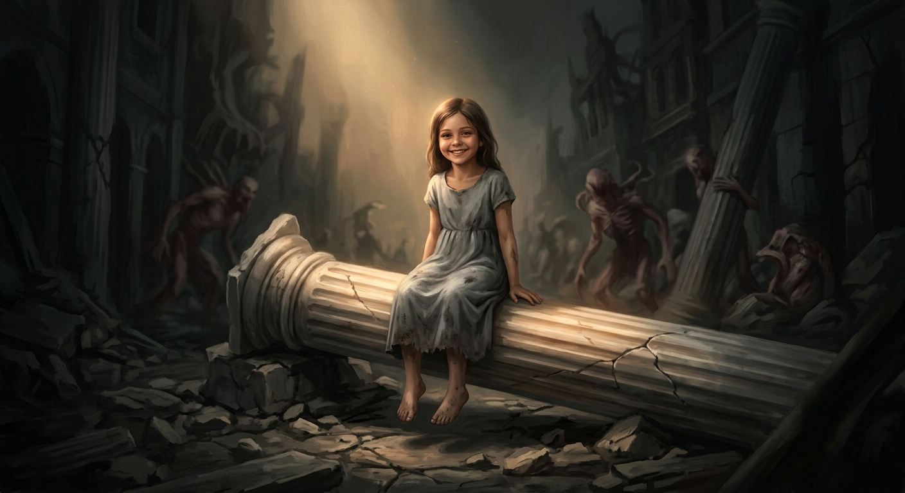

OASIC
Дорога из Теплиса
История о том, как пепел становится началом, а боль — силой
В мире, где магия течёт в крови...
Лаврики control heat. Блажи повелевают гравитацией. Сильнейшие могут рвать саму ткань времени. Но ни один дар не защитит тебя от предательства.
Теплис — город, где улицы мостят термо-плитами, а в окнах горят сотни ламп. Рэй чинил их бесплатно. Верил, что доброта — это валюта, которую мир принимает.
Он ошибался.
Теплис предал. Торин продал. Отец не заметил. На клейме вора — чёрная метка — Рэй ушёл в пепельные пустоши.
Там, в сердце древней пещеры, он нашёл Гримуар — книгу из человеческой кожи, связанную чёрными цепями. Ограничитель сорван. Сила хлынула.
Теперь он — нимб из чёрного пламени, крылья из дыма, меч из ненависти. Наследник Араниса — Первого Изгнанника, того, кого стёрли из истории.

Персонажи
Рэй
Наследник Араниса
Его кровь помнит древнюю магию. Когда он злится — небо раскалывается. Когда плачет — земля горит. Фиолетовые линии пульсируют под кожей, как трещины в зеркале души.
Лира
Сестра с верой в сердце
Её глаза — единственный свет во тьме Рэя. Она до сих пор верит, что её брат — не монстр. Когда он уходил из Теплиса, она просто сказала: «Я буду ждать».
Торин
Блаж. Предатель
Его иссиня-чёрные перья топорщатся, когда он лжёт. Харизматичный. Улыбчивый. Первым протягивает руку — и первым вонзает нож. Это он подставил Рэя.
Марта
Охотница на тени
Её волосы — чёрные с рыжими прядями, будто уголь и кровь. На плече — ожог в форме крыла, метка Араниса. В 12 лет она видела, как тень с крыльями убила её родителей.
Оливер
Алхимик-безумец
Рыжие волосы ярче пламени. Кривой нос сломан не раз. Вечно хохочет, даже когда мир рушится. Его плащ — лоскутное одеяло из кожи, ткани и чего-то блестящего.
Элис
Предательница гильдии
Рыжие волосы, пробивающиеся из-под смытой чёрной краски. На запястье — красный рубец, где было клеймо гильдии. Она выбрала Рэя. Выстрелила в своих.
Аранис
Первый Изгнанник
Его кожа покрыта шрамами-рунами, светящимися изнутри. Глаза — пустые, как ночное небо над бездной. Тысячу лет назад он чуть не уничтожил мир.
Грей
Отец Рэя
Мастер-кузнец Теплиса. Его сердце так же холодно, как остывший металл. Он не бьёт сына. Он просто не замечает его. «Ты ценен ровно настолько, насколько можешь быть полезен».
"Он не хотел становиться чудовищем. Он просто очень устал быть человеком в мире, где за доброту платят предательством."
Главы
Глава 1: Дорога из Теплиса
Последняя лампа
Рэй — идеальный лаврик. Чинит лампы бесплатно, согревает город даром. Лучший друг Торин просит украсть чертежи отца. Рэй отказывается. Через три дня чертежи пропали, а на столе нашли перо Торина. Клеймо вора. Изгнание.
Глава 2: Пробуждение Тени
Гримуар
В пещере среди пепельных пустошей Рэй находит книгу из человеческой кожи, связанную чёрными цепями. Ограничитель срывается. Сила хлынула — древняя, тёмная, жадная.
Глава 3: Тень и Кровь
Первое превращение
Фиолетовые линии под кожей. Чёрный нимб над головой, вырезающий дыры в реальности. Крылья из дыма. Меч из ненависти. Он становится тем, кого мир боялся — наследником Араниса.
Глава 4: Край Пекла
Фейнвинд
Город-труп. Небо багровое. Три луны. Гибриды — существа с искажёнными телами, ползающие по руинам. И загадочная девочка, которая появляется из тумана.
Глава 5: Встреча с Оливером
Таверна "Кривой котёл"
Бармен с тремя глазами. Рыжий алхимик с кривым носом, сломанным не раз. Оливер Грейвуд — безумец, переживший собственную смерть.
Глава 6: Тропа Наследника
Туманы Забвения
Глина в руках Рэя лепит миниатюрный Теплис. Старик Мудрец, вплетённый в дерево, рассказывает правду: Аранис был первым.
Глава 8: Охотник на Тени
Бой в каньоне
Профессиональный убийца с клинками из застывшего света. Рэй отпускает себя — нимб расширяется, мир разрывается. Но голос Лиры останавливает его.
Глава: Цена выбора
Элис
Бывшая охотница. Её отец защищал изгоев — она расплачивалась в школе. Она нашла Рэя в отряде гильдии. И выбрала его. Выстрелила в своих.
Отрывок
— Хватит строить из себя жертву! — её голос звенел, как разбиваемое стекло. — Ты — чудовище, играющее в человека. И я устала играть вместе с тобой!
Рэй смотрел на неё и не верил. Это была не его жена. Это была маска. И в этот миг из-за деревьев, с ухмылкой, которую он видел в самых страшных кошмарах, вышел Торин.
— Спасибо, что присмотрел за моим сокровищем, дружище.
Мир вокруг Рэя не просто рухнул. Он взорвался абсолютной, беззвучной пустотой. Внутри что-то лопнуло. Последняя плотина, сдерживавшая океан отчаяния.
"Ты думал, такое, как ты, можно полюбить?" — её шёпот был последней каплей яда.
И из этой пустоты выползло не чувство. Состояние. Безразличие. Он поднял руку... и над башней, где его ждали Марта и Оливер, сомкнулась сфера абсолютной изоляции.
Тьма уже внутри. Огонь вот-вот вырвется наружу.
Готов ли ты узнать, во что превращается душа, когда её предают те, кого она любила? Рэй сделал свой выбор. Теперь твоя очередь — перевернуть первую страницу.
Галерея мира OASIC
🏰 Локации


🗡️ Предметы


🎬 Сцены


